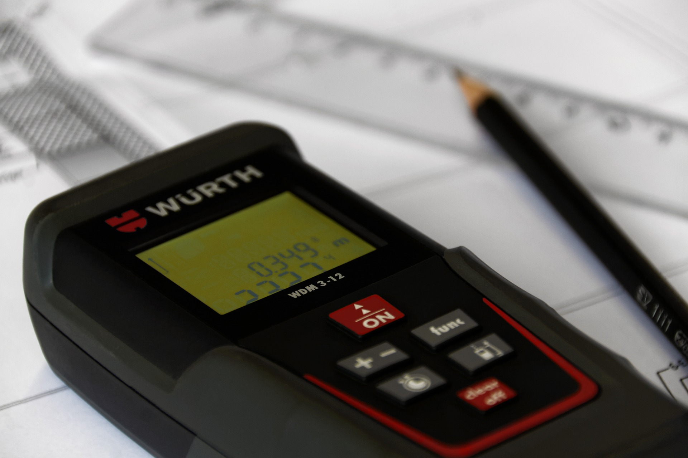
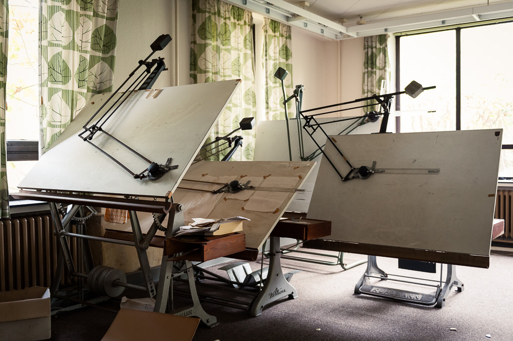
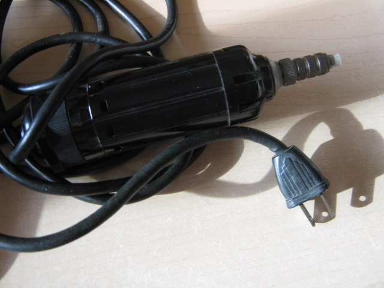

Hardware
Here are some hardware applications used in Architecture:

Laser Measurer
A Laser Measurer measures a distance in a given space. The device emits laser light and measures the time it takes to get from one point to another to find the distance.

Scale Ruler
A scale ruler is used to draw measurements so that the design will be accurate. There are different measurement units on the ruler so it’s simple to use.

Drafting Board
A drafting board is a smooth board that is used to make drawings on paper so there aren't any bumps. It is also used to make precise measurements on your drawing.

Electric Eraser
An electric eraser helps with erasing specific lines or marks that are unwanted and is more efficient than a regular eraser when sketching.